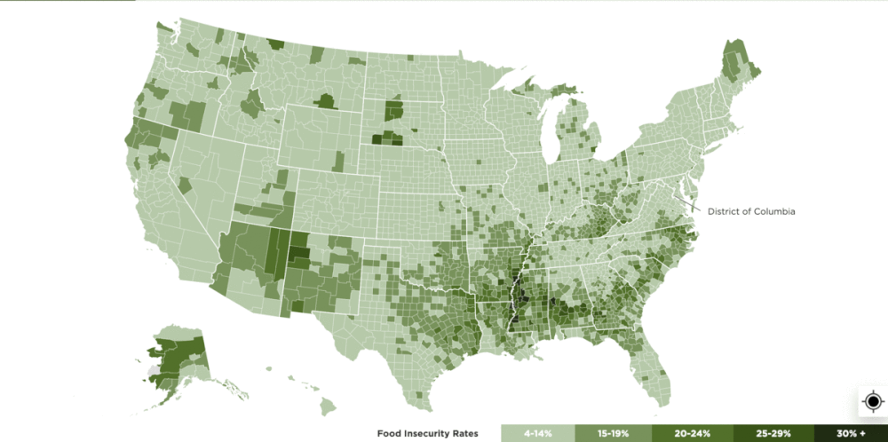
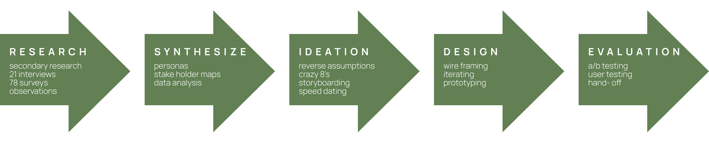
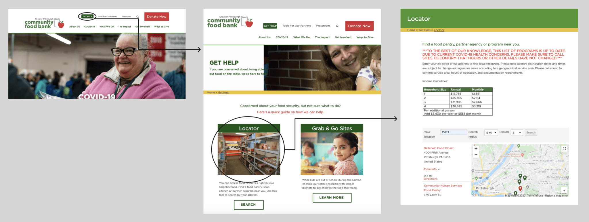
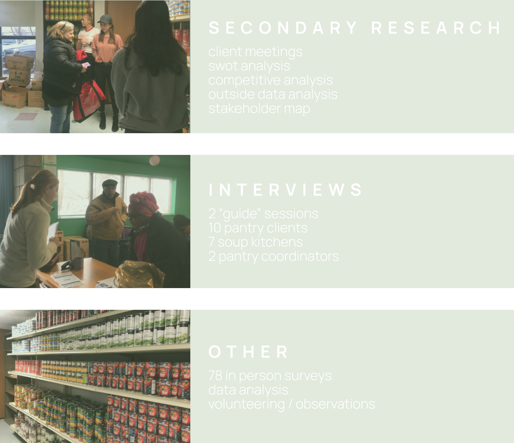
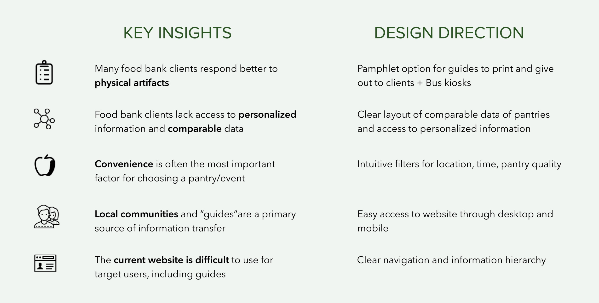
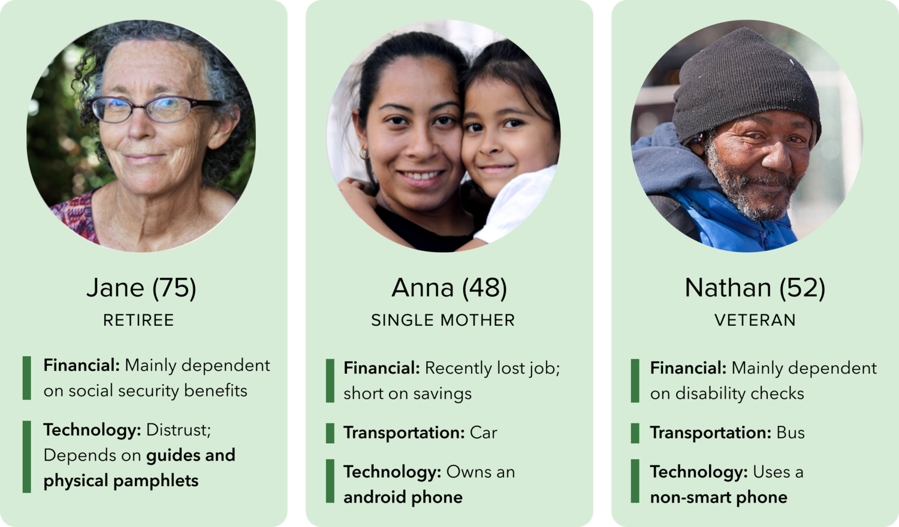
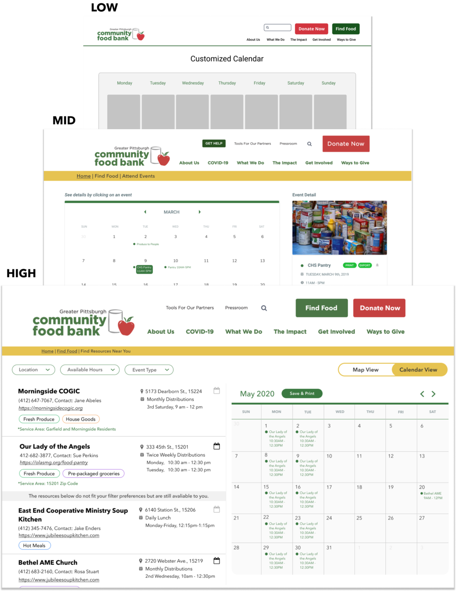
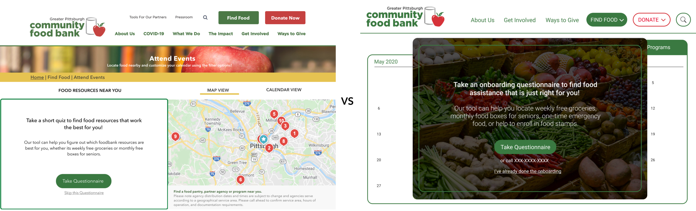
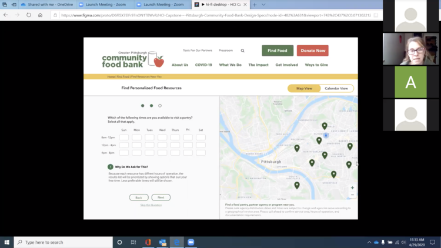
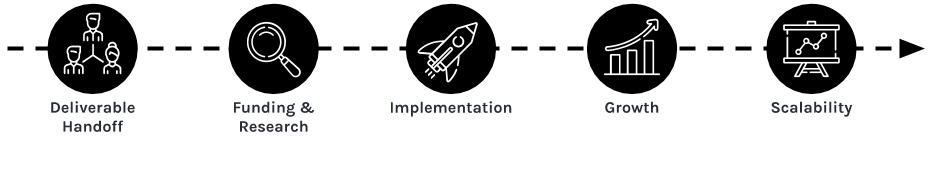

Redesigning Digital Access
to Food Resources
Client Based HCI Capstone Project
Team Members: Dian Lee, Nupur Maheshwari, Amru Palaniyappan, Roxanne Zhang
Role: Project Manger (Client Liason + Design Lead)
Client: justin gilmore, decision support analyst, greater pittsburgh community food bank
 Jump to Final Prototype
Jump to Final Prototype
How can we not only create access for new customers, but also better inform current customers of the full range of resources the Food Bank and partner networks provide?
Today, there are 37,227,000 people who are food insecure in the United States. With the pandemic, the number of people experiencing food insecurity in 2020 would even increase by over 17 million. This implies that approximately 54 million people (1 in 6) would experience food insecurity in 2020.
These food-insecure families often reach out to food banks to find the food resources and help that they very need. However, we found the current state of the locator on the food bank website to be inefficient for new users to gain specific information about the resources. The website was not responsive, there was a lack of clear information hierarchy, and the locator offered a bare minimum of available resources, only filtering for location.

Process

Current State
We found the current state of the locator on the food bank website to be inefficient for new users to gain specific information about the resources. The website was not responsive, there was a lack of clear information hierarchy, and the locator offered a bare minimum of available resources, only filtering for location.


Research Plan
Our team’s goal during our research phase was to identify the underlying needs of the Greater Pittsburgh Community Food Bank stakeholders. More specifically how food bank customers gain access to information about food bank events and how to increase that access as well as flow of information.
This initial research we conducted was exploratory in nature and exposed us to a wide range of information about food pantry clients as well food pantry needs. We conducted primary and secondary research, both of which helped us in defining our problem space.
The primary research we conducted consisted of volunteering at a food pantry, surveying a large food pantry event, and conducting user interviews at a food pantry. The secondary research we conducted consisted of a competitive analysis, SWOT analysis, and analyzing data given to us by the food bank.
Research Results

After identifying the information we wanted to leverage in our solution, we started consolidating information through creating personas and confirming our findings with guides. We then began ideating through activities like reverse assumptions and crazy 8s. As a result of these activities, we were able to widen the scope of possible solutions.Through this process we solidified five story boards with which to begin preliminary speed dating. We tested these with Food Bank employees (unable to access customers at this point due to COVID-19) to validate user needs and understand or reverse assumptions we had. After the sessions, we narrowed down our potential solutions based on feedback from the employees, feasibility, sensitivity to the user base and which idea most directly targeted our goal – quick and convenient information transfer.
Personas


Low → Mid → High Fidelity Iterations
After the feedback from speed-dating, we identified the main screens we wanted to flesh out and adopted a parallel workflow. After each iteration, we asked for feedback from our client and advisor, which we reflected in our designs.
A / B Testing
We also designed different screens/user flows to condwith our client and 12 food bank employees, focusing on specific details such as:
1. Entry points to different functionalities (find food page, quiz)
2. Information hierarchy and navigation
3. Needs of different user groups (First time users, Repeating website visitors, Guides)
4. User control (i.e. Quiz skip functionality, Switch between map/calendar view, filters)
5. Onboarding quiz questions
We especially paid attention to the wordings (i.e. “take questionnaire” vs “start”), considering our target audience.

User Testing Final Prototypes
We conducted user testing with two Food Bank employees through screen-share of the click-through prototype. Feedback mainly revolved around using more intuitive interactions/icons and adding information related to COVID-19, which we later added to our final design. Other than that, feedback was positive:
“The calendar view is excellent and…the questionnaire will be really helpful to easily find the right option… Very clean and user-friendly!”
“As a food bank employee, so many people come to me to ask two things: where and who to contact… This redesign will really help them find the answers themselves”


Desktop Prototype
Many food bank clients currently access the internet through library desktop computers. Guides (those who give help such as Food Bank employees) can also use the desktop version to help clients find specific resources and print physical copies of personalized calendars.
1. Optimized for Clickability + Visibility
2. Guiding the Users to the Right Resource Options
4. Printable Personalized Calenders
Mobile Prototype
Food Bank clients have greater access to mobile phones (Android typically) than desktop while at home and out. This is why we designed a responsive website rather than an app. The design does not differ much from desktop designs except having finger-friendly designs such as larger buttons.
Challenges + Next Steps
The biggest open challenge for the project was due to the pandemic. The Food Bank website serves multiple user groups including donors, volunteers and end customers looking for food. Since the end customers are not tech-savvy, it was very difficult for us to reach out to them through Zoom or any online forums, given the pandemic situation. We also did not want to strain the Food Bank employees precious time in setting up a user testing room at a distribution center. We hope that we could do more user testing with Food Bank clients in the future.
Overall, working with a client was a wonderful learning opportunity. We were delighted to have worked with such a great organization and gotten the opportunity to delve into such a rich and complex problem space. We are thoroughly happy with the final outcome and couldn’t have asked for a better capstone experience.
The Food Bank plans to implement our designs soon and if proven successful in the Pittsburgh area, use our designs as a foundation to update other regional food banks websites’.
